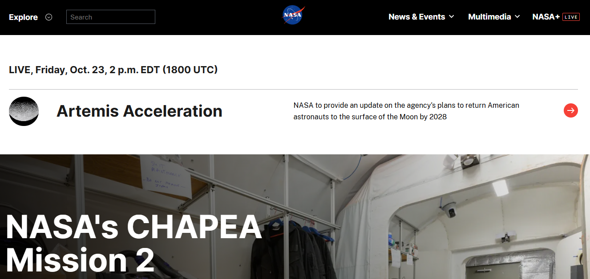

What is the URL of the website?
https://www.nasa.gov/
What is the name of the website?
NASA (National Aeronautics and Space Administration)
Who is the site's target audience?
The target audience for this website includes people interested in space exploration, science, astronomy, technology, and NASA missions. It is also useful for students, teachers, researchers, and the general public who want to learn about space and NASA's activities.
How is the site organized?
The site has a navigation bar at the top with sections such as Explore, News & Events, Multimedia, and NASA+. A search bar helps users find specific information. The main page features important NASA news and missions, including the Artemis program, with large images and headlines. This layout allows visitors to explore space-related information, recent discoveries, mission updates, videos, and other educational content.
Which CRAP Design Principle does the site use? Provide at least one example.
The site uses Contrast and Proximity. Contrast is visible in the black navigation bar with white text, which makes the menu items easy to distinguish. The large headline and bright background contrast in the main feature section also draw attention to NASA's mission. Proximity is used by placing the Artemis mission headline close to its related image and description, helping users understand that the content belongs together. The repeated navigation styles also demonstrate Repetition.
What is the Audit Score according to the Accessibility Checker?
The accessibility audit score has not yet been recorded. The website must be tested with the accessibility checker required for the assignment before a score can be reported. The screenshot provided shows the NASA homepage, but it does not show accessibility audit results.
What is the site's effectiveness? Does it help users complete actions accurately?
The site is effective because it provides clear navigation, a search bar, and featured news that help users find information about NASA's missions and activities. The large headlines and related descriptions help visitors understand the main topics and select the information they want to explore. However, the accessibility of these features should also be checked using an accessibility checker and keyboard navigation.
What is the site's efficiency? Can users perform tasks quickly?
The site supports efficient browsing by keeping the main navigation and search bar at the top of the page. Visitors can quickly access news, multimedia, and mission information without having to search through unrelated content. The prominent feature stories also help users identify important updates quickly. However, the number of navigation options and large featured sections may require some users to spend extra time finding specific information.
How is the engagement? Is it pleasant to use and appropriate for its industry/topic?
The website is engaging and appropriate for a space and science organization. The large photographs, bold headlines, and featured mission stories attract attention and encourage visitors to explore NASA's work. The black navigation bar and clean white content areas create a professional appearance, while the space imagery makes the content visually interesting. The design is suitable for presenting scientific discoveries and space exploration to a broad audience.
Make at least one recommendation to improve this website based on what you learned in this module.
One recommendation is to ensure that all images have accurate alternative text so screen-reader users can understand important visual content. NASA should also maintain strong color contrast, clear keyboard focus indicators, and descriptive link labels throughout the website. In addition, the navigation could be simplified or grouped more clearly to help visitors find specific mission information more quickly. These improvements would make the site more accessible and easier to use for people with different needs.